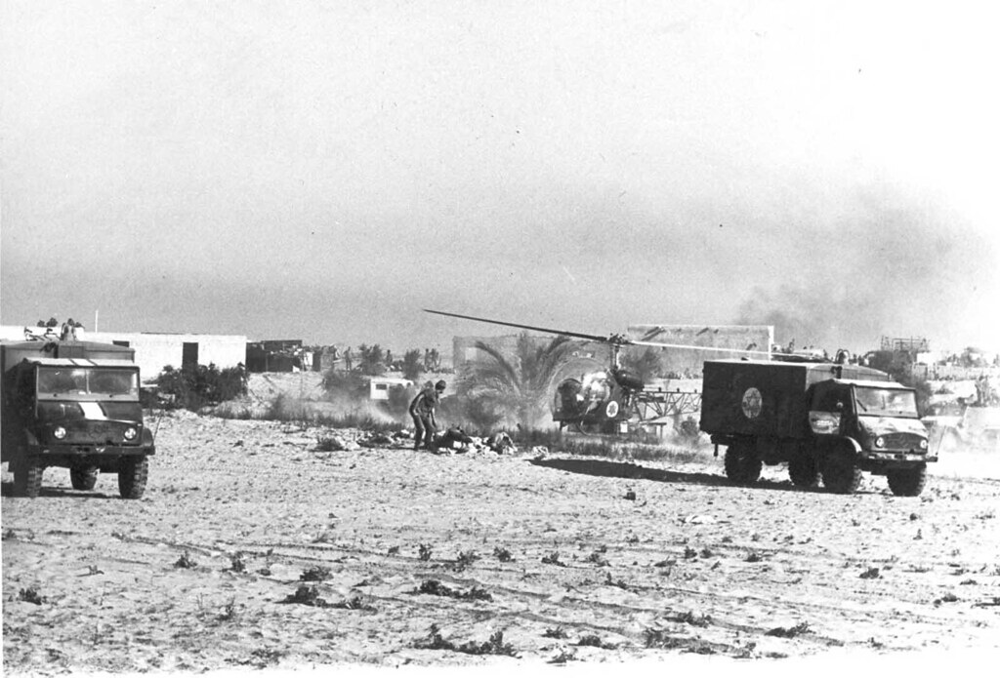
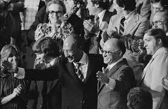
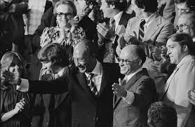

Histoire moderne et conflits

Cette photo a été prise lors de la guerre de 6 jours, conflit qui changera la face du Moyen-Orient jusqu'à aujourd'hui. Le conflit débute suite aux désaccords entre les pays voisins et avec les circonstances de l'indépendance du nouveau pays d'Israel. Les disputes territoriales, religieuses et politiques ont souvent causé des tensions violentes.
Le 5 juin 1967, alors que les tensions étaient à leur paroxysme, Israel lanca une attaque aérienne surprise et dévastatrice sur les forces aériennes Égyptiennes et Syriennes et ainsi débutera cette guerre qui affaiblira considérablement les capacités de l'armée Égyptienne.

Ces photos viennent de la guerre de Yom Kippur, conflit qui visait à reprendre le territoire perdu lors de la guerre de 6 jours, principalement la péninsule de Sinai. Il sera débuté par une attaque surprise par l'armée Égyptienne sur les positions Israéliennes. Après plusieurs années de conflit, des négociations sont discutées au Camp David en septembre 1978 et un traité de paix est enfin signé entre les deux pays.
 
